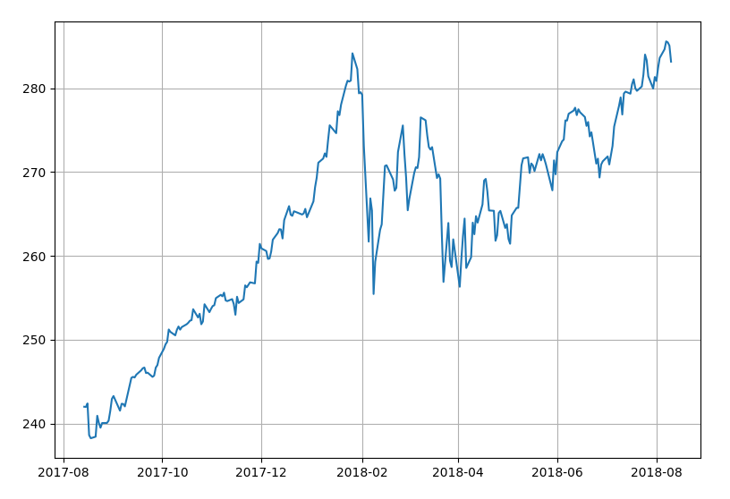

Line Chart
In this example we will draw a simple stock chart. It will be a line chart of daily closing prices of SPDR S&P 500 ETF. It will look like this.

Load Data
You can get market data from different sources. I downloaded one year of historical SPY data from Yahoo Finance and saved it in a file. The file is in CSV format and looks like this:
We will use Pandas library to read CSV file into a DataFrame object. DataFrame is a 2-dimensional labeled data structure with columns of potentially different types. You can think of it like a spreadsheet or SQL table.
Draw the Chart
We will use Matplotlib library for charting.
The chart should look like this.
Label Customization
Now, let's customize display of x-axis labels. Insert the following code before plt.show().
Now the chart looks like this.